– Hybrid Model Development : Created a hybrid machine learning model by combining Random Forest and Linear
Models for heart disease prediction.
– Optimized Accuracy : Fine-tuned model parameters and ensemble techniques to achieve superior prediction accuracy,
sensitivity, and specificity.
–Performance Evaluation : Utilized cross-validation and advanced metrics to assess model robustness and generalization,
providing valuable insights for clinical decision-making


 
